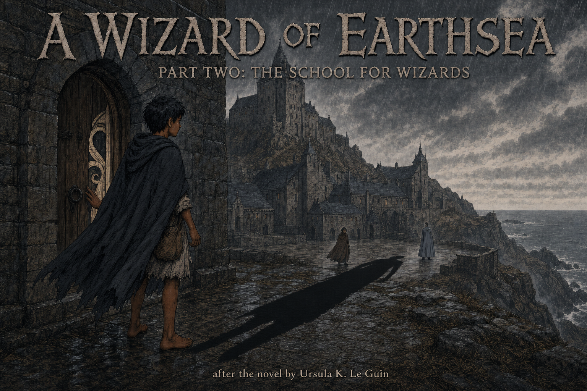

The School for Wizards
Ged found the quick road he had chosen. Roke gave him knowledge, friendship, and every chance to learn restraint; pride turned those gifts into a measure against Jasper. The shadow he loosed cost Nemmerle his life and left Ged changed. He departed only after learning that the last door opened through a question, not a command.
What Did Power Cost?
1. Why could Ged enter the Great House only after speaking his true name?
Yes. The first threshold tests humility and trust, not magical force.
The letter brings Ged to the school, but power cannot cross the door. He passes only after admitting he needs help and risking his true name.
2. Why did Master Hand distinguish illusion from real change?
Yes. Greater power means wider consequence, not permission to repair harm afterward.
The lesson is about consequence. An illusion ends with perception; a true change alters the world beyond the moment of display.
3. Why could Vetch's friendship not end Ged's rivalry with Jasper?
Yes. Vetch offers another way to belong, but Ged keeps choosing proof over connection.
No spell compels Ged. Pride makes the rivalry feel necessary, and isolation protects that belief from friendship.
4. Why was Nemmerle's rescue a cost to the whole school, not only a rescue of Ged?
Yes. Nemmerle saves Ged, but Roke loses its Archmage and the danger remains beyond its walls.
The school and Knoll survive. The irreplaceable loss is Nemmerle, who spends his life to keep Ged alive while the shadow escapes.
5. Why could Ged pass the final door only after he stopped trying to command it?
Yes. The last threshold repeats the first lesson at a deeper level: wisdom begins where command ends.
Ged still knows magic. What changes is his posture toward knowledge: he asks for it instead of treating another's name as something to seize.